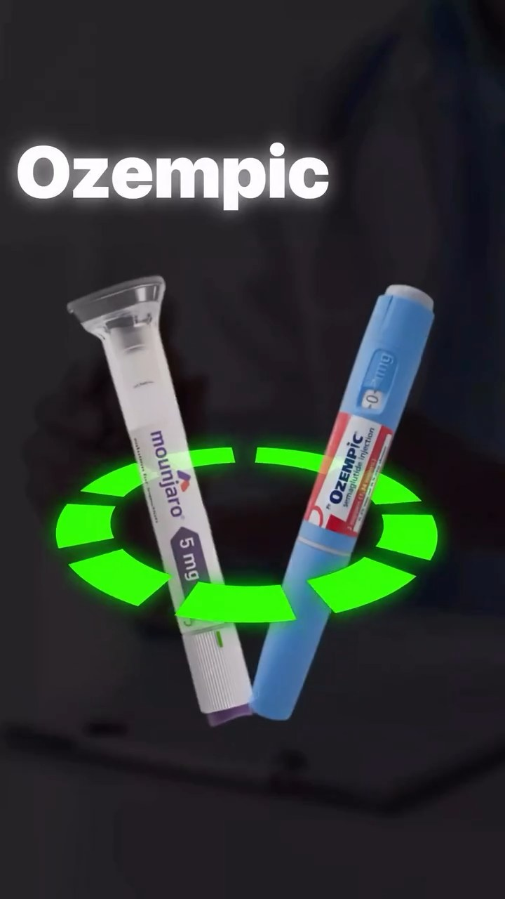
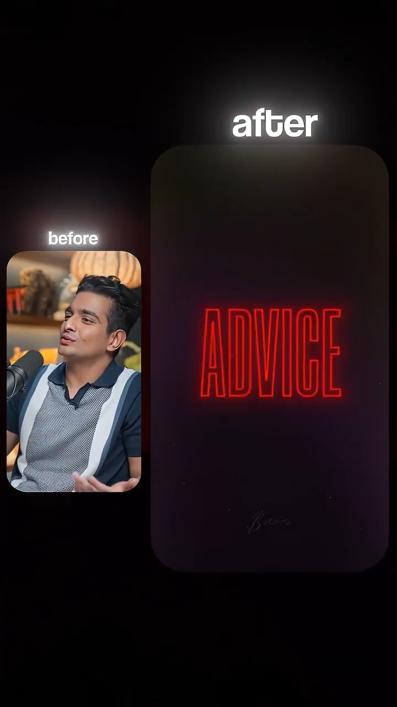
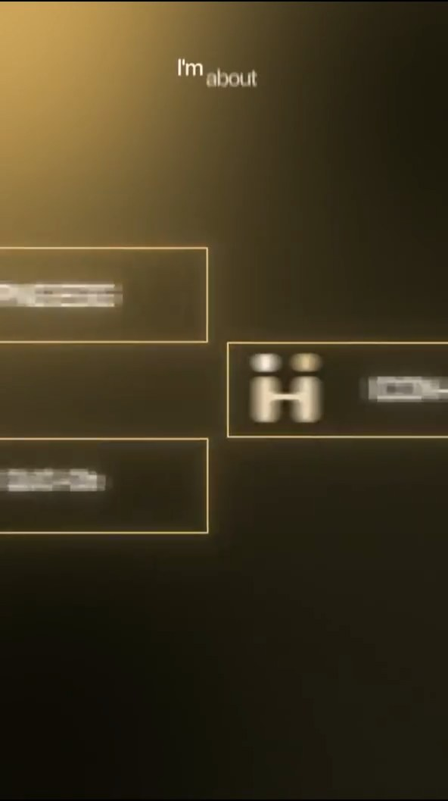
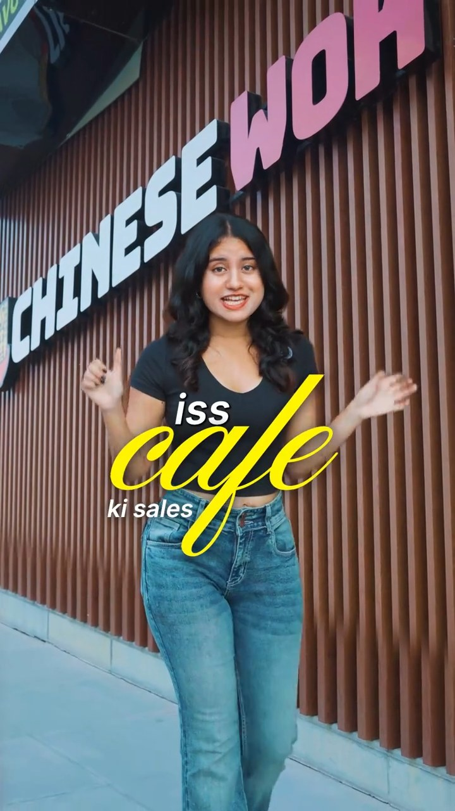
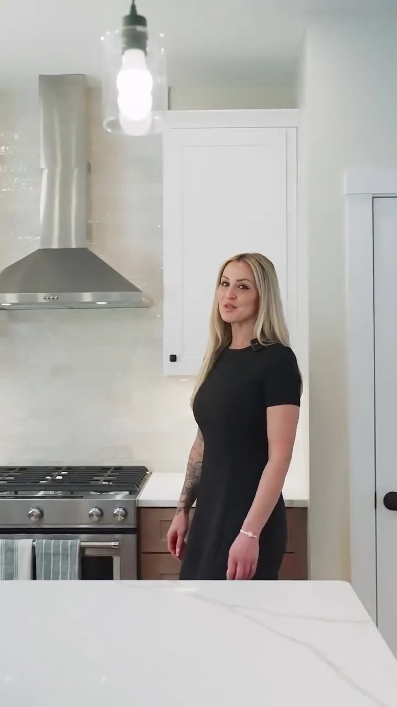
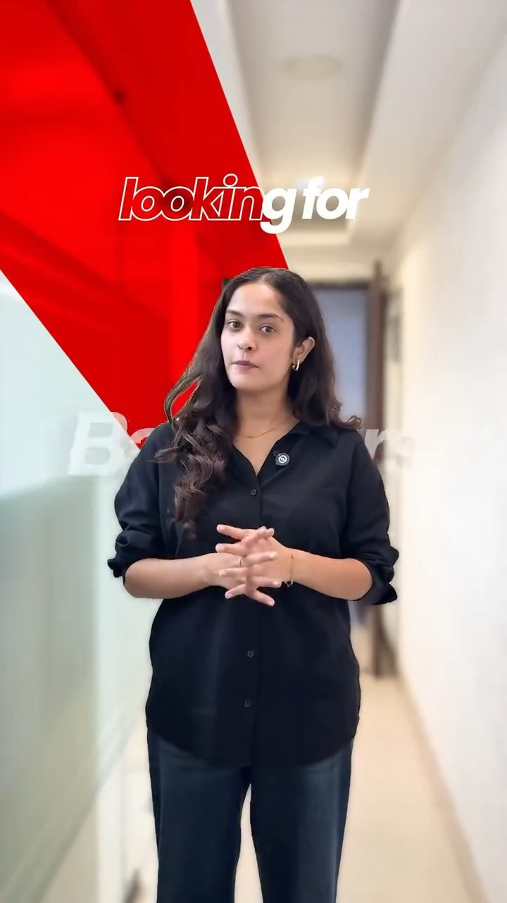

MANMOHAN
About Manmohan
I transform ideas into cinematic visual stories through professional video editing, motion graphics, color grading, sound design, and visual effects. Every project is crafted to maximize audience engagement while maintaining a premium and professional look.
Narrative Pacing & Retention
Editing engineered to maximize watch-time and hold audience focus.
Broadcast 4K Color Grading
Precision DaVinci color wheels, skin tone matching, and cinematic LUTs.
Advanced Motion Graphics
2D/3D kinetic typography, 3D medical renders, and logo animatics.
Spatial Sound Design
Multi-track audio equalization, Foley sound effects, and voice mastering.
My Services
High-impact post-production solutions engineered to elevate brand prestige, engage audiences, and drive measurable conversions.
Video Editing
Seamless narrative cutting, pacing, and multi-cam assembly designed to capture and retain audience attention.
Motion Graphics
Eye-catching 2D/3D motion elements, kinetic titles, and brand animations that bring static concepts to life.
Color Grading
Professional DaVinci Resolve color transformation, skin tone correction, and custom LUT development for 4K/HDR.
Social Media Editing
High-retention vertical short-form content designed specifically for modern algorithms and viral hooks.
Commercial Ads
High-impact commercial video productions crafted to convert viewers into paying customers.
Medical Animation
Precise 3D anatomical render visualizations, doctor consultation videos, and healthcare explainer graphics.
Featured Portfolio
Click any thumbnail to experience the full 4K video reel, sound design, and project details.

Aura Sound Pro Headphones Commercial
High-end 4K commercial advertisement showcasing noise-cancellation technology with dynamic sound wave motion graphics and moody studio color grading.

Cardiology 3D Medical Visualizer
High-precision 3D medical animation demonstrating minimally invasive catheter implantation, designed for doctor consultations and surgical training.

Echoes of the Himalayas Documentary
Award-winning cinematic documentary short exploring mountain communities, featuring custom orchestral audio mixing and golden-hour color grading.

Cyberpunk Title Sequence & Logo reveal
Neon futuristic 3D logo reveal and intro sequence utilizing custom particle systems, glow shaders, and impact kinetic typography.

Apex Global Tech Corporate Overview
Sleek executive corporate film showcasing enterprise AI infrastructure with fluid lower-thirds, clean pacing, and professional voiceover sync.
Viral Tech Hack — 10s Fast Cut
High-speed vertical YouTube Short with animated kinetic captions, sound effect markers, and instant hook timing.

Streetwear Urban Fashion Campaign Reel
Fast-paced Instagram Reel featuring speed ramps, custom whip-pan transitions, sound design beats, and film grain texture.
Doctor Consultation & Health Guide Video
Comprehensive patient education video integrating medical motion graphics, clear voiceover audio polishing, and reassuring visual color palette.

Phantom Hypercar 4K Cinematic Reveal
Dramatic lighting automobile reveal with slow-motion color grading, engine audio remastering, and particle smoke visual effects.
Technical Skills
Mastery across industry-standard post-production suites, non-linear editing software, 3D engines, and audio workhorses.
Adobe Premiere Pro
Editing & Compositing • 5+ yrsAfter Effects
Motion & 3D • 5+ yrsDaVinci Resolve
Audio & Finish • 4+ yrsPhotoshop
Editing & Compositing • 5+ yrsIllustrator
Motion & 3D • 4+ yrsAdobe Audition
Audio & Finish • 4+ yrsBlender 3D
Motion & 3D • 2+ yrsExperience Timeline
Key professional milestones, agency supervisory roles, and major production achievements.
Senior Motion Graphics & Colorist Lead
Partnering directly with global brands, medical organizations, and top-tier YouTube channels to direct end-to-end post-production.
Lead Video Editor & Post Supervisor
Managed a team of 4 assistant editors, overseeing color workflows, audio mastering, and commercial delivery schedules.
Motion Graphics Specialist & Medical Animator
Specialized in turning complex medical research and doctor consultation scripts into engaging 2D/3D animated explainer content.
Junior Video Editor & Content Creator
Handled social media clips, podcast audio cleaning, YouTube video assemblies, and kinetic typography titles.
Client Testimonials
Direct feedback from medical directors, creative agency leaders, and high-growth content creators.
"Manmohan’s medical motion graphics transformed our patient consultation videos. His attention to anatomical precision paired with smooth 3D animation elevated our clinical reputation tremendously."

Dr. Aris Thorne
Chief Medical Officer — HealthTech Global
Why Choose Me
Combining technical post-production precision with agency-standard reliability for seamless collaboration.
Fast Delivery
Strict adherence to deadlines with rapid turnaround times for time-sensitive launches.
Creative Storytelling
Crafting emotional hooks and narrative arcs that keep viewers engaged from start to finish.
Premium Quality
Crisp 4K rendering, broadcast-ready audio mastering, and color-calibrated finishing.
Unlimited Revisions
Dedicated to your complete satisfaction with iterative polishing until you love the result.
4K Video Editing
Full pipeline support for native 4K DCI, RED RAW, ProRes, and HDR color workflows.
Professional Communication
Clear project updates, timecode feedback loops, and transparent client collaboration.
Production Workflow
A transparent 7-step post-production pipeline designed for clarity, speed, and uncompromising quality.
Project Discussion
Brainstorming vision, target audience, brand style, and technical requirements.
Planning
Reviewing raw footage, selecting music, preparing storyboards and timeline structure.
Editing
A-roll storytelling cut, pacing adjustments, multicam sync, and narrative flow assembly.
Motion Graphics
Adding custom titles, logo animations, lower thirds, 3D elements, and callouts.
Color Grading
DaVinci Resolve shot matching, skin tone balance, cinematic LUTs, and exposure tuning.
Sound Design
Noise reduction, audio leveling, SFX placement, EQ balancing, and music sync.
Final Delivery
Exporting optimized 4K files, social aspect ratios, and final client sign-off.
Contact Me
Have a commercial, YouTube reel, or motion design project in mind? Connect directly on WhatsApp for real-time discussion and instant response.